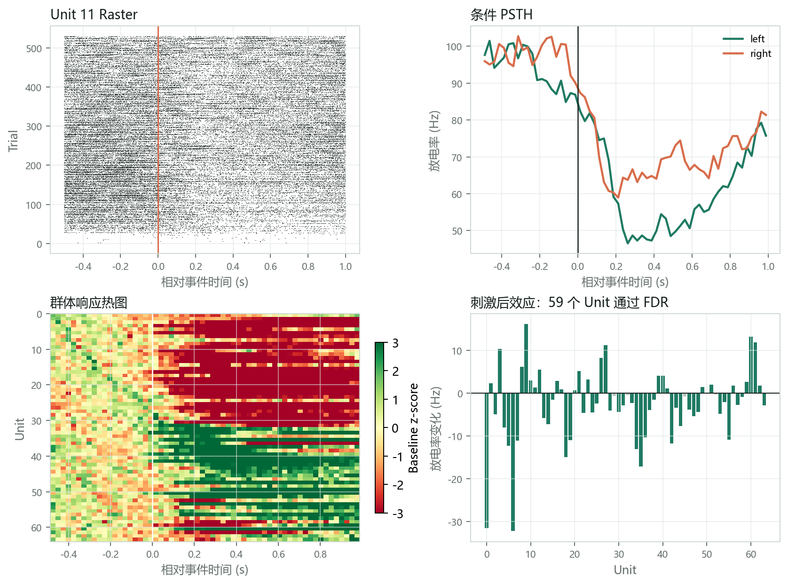
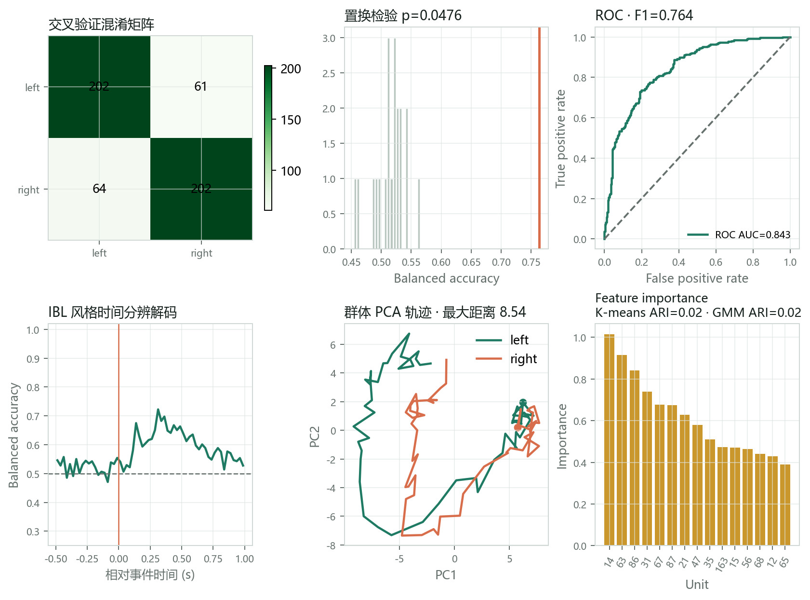
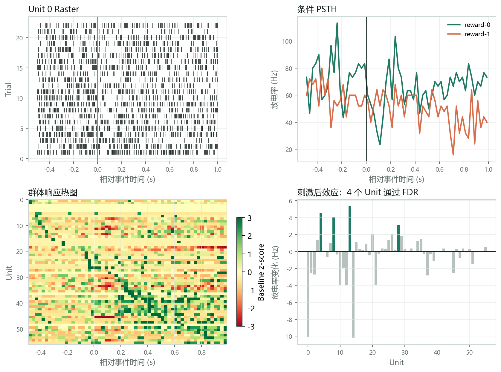
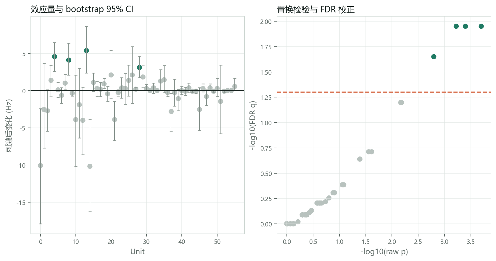

Real files, explicit provenance, bounded claims
用真实公开会话验证，而不是只让模拟数据“看起来能跑”
Validation on real public sessions, not simulation-only claims
本页记录 NeuroFlow 实际读取的 IBL ALF 和 Buzsáki/DANDI NWB 文件、 运行过的节点、生成的结果和暴露出的失败模式。它是软件集成验证，不是对原论文全部统计的复现。
This page records the exact IBL ALF and Buzsáki/DANDI NWB files, executed stages, outputs, and failures. It validates integration, not every claim in the source papers.
验证分为三层
Three validation layers
| 层级 | 这里检查什么 | 通过证据 | 不能宣称什么 |
|---|---|---|---|
| 格式与结构 | 文件字段、ragged spike times、trial/event、位置和 interval 能否无损映射 | 真实数量、时间范围、ID 与元数据可核对 | 不能证明科学结论正确 |
| 工作流功能 | 导入后能否进入行为、事件对齐、PSTH、统计、解码和出图 | 节点完成、结果非空、异常被标记、图可交互/导出 | 不能把 smoke test 当论文复现 |
| 方法复现 | 是否使用原论文筛选、样本层级、模型、统计和图定义 | 逐图脚本、原参数、原样本和数值对照 | 当前页面只完成部分方法结构，未声称完整复现 |
IBL Brain-Wide Map / Neuropixels
- 论文
- A brain-wide map of neural activity during complex behaviour, Nature (2025)
- 官方数据说明
- 2025 Brain-Wide Map release
- 官方代码
- int-brain-lab/paper-brain-wide-map
- 数据许可
- CC-BY 4.0；公开 S3 bucket 与 ONE API
- Session eID
4ecb5d24-f5cc-402c-be28-9d0f7cb14b3a- Probe insertion ID
da8dfec1-d265-44e8-84ce-6ae9c109b8bd,probe00- 本地结构
- ALF trials 对象 + probe00 spike times/clusters/samples/amplitudes
实际导入与执行
| 检查项 | 实际结果 | 执行边界 | 状态 |
|---|---|---|---|
| Units | 775 | 全部导入统一秒制接口 | 通过 |
| Spikes | 20,096,205 | 全部 spike times/clusters 映射 | 通过 |
| Trials/events | 529 / 529 | 以 stimOn_times 对齐，condition 为 left/right | 通过 |
| 行为图 | signed contrast 心理测量与反应时 | 使用 ALF trial 字段 | 通过 |
| 事件分析 | 64 Unit 计算验证子集 | 按 spike 数选择 64 Unit 只用于控制测试时间，不用于无偏总体推断 | 通过 |
| 统计 | 64 行；58 个在当前刺激前后定义下通过 FDR | 这是软件输出核对，不是原论文统计复现 | 通过 |
| 解码 | balanced accuracy 0.764 | 20 次置换，p 的最小分辨率为 1/21；只作 smoke test | 有限验证 |

图中 raster、条件 PSTH、Unit 热图和效应概览来自同一真实 ALF 会话。 当前 64-Unit 子集偏向高 spike 数，仅用于检验大规模 ragged spikes、529 个 trial 和下游模块的接口。

置换仅 20 次时 p=0.0476 只是分辨率下限，不能作为正式显著性证据。 正式研究需增加置换次数、按 session/animal 分组验证并复用原论文纳入标准。
Buzsáki Lab / DANDI NWB
- 论文
- Preconfigured dynamics in the hippocampus are guided by embryonic birthdate and rate of neurogenesis, Nature Neuroscience (2022)
- 公开档案
- DANDI 000552, version 0.230630.2304
- 代码来源
- Buzcode 与论文列出的定制 MATLAB 脚本来源
- 数据许可
- CC-BY 4.0
- Asset ID
f36a3ffe-1aa2-4019-a8fc-07b03bb2b38e- 文件
sub-e14-2m3_ses-e14-2m3-201121_behavior+ecephys.nwb, 约 41 MB
选择该文件不是因为它最小，而是因为同一 NWB 同时具有 Units、reward events、线性化位置、 subject position、睡眠状态和 ripple intervals，适合验证多对象接口。Buzsáki Lab 的标准数据容器和公开资源见 Data structure and format、 Databank。
| 对象 | 实际数量 | NeuroFlow 映射 | 状态 |
|---|---|---|---|
| Units / spikes | 56 / 3,184,221 | NWB ragged spike_times → 秒制 Unit 字典与 sorting registry | 通过 |
| Reward events | 22（reward-0: 12, reward-1: 10） | event/trial 表与条件标签 | 通过 |
| Position | linearized + 2D subject position | 派生 NPZ 缓存并保留 NWB 路径 | 通过 |
| Sleep states | 66 intervals | start/stop/label 元数据 | 通过 |
| Ripples | 1,483 intervals | start/stop 与 ripple 表索引 | 通过 |
| 统计 | 56 行；4 个当前事件前后效应通过 FDR | 8 个常量条件样本被标记不可检验，没有中断流程 | 通过 |
| 解码 | balanced accuracy 1.0 | 22 trial、单 session、20 次置换 | 只作接口验证 |


真实数据让我们发现并修复了什么
Failures revealed by real data
| 问题 | 模拟数据为何没暴露 | 修复 | 用户现在看到什么 |
|---|---|---|---|
| Kruskal 对全相同数值抛异常 | 模拟 trial 响应有连续变化 | 统计检验增加常量、零方差、ties 和未定义结果保护 | 状态为 not_testable，而不是全页崩溃或伪显著 |
| NWB Units 为 ragged 数组 | 模拟数据直接是 Python 字典 | 按 spike_times_index 恢复每 Unit 边界并验证 id 数量 | 56 Unit / 3,184,221 spikes 可核对 |
| 公开文件可同时有 reward、position、state、ripple | 旧入口只写“IBL 公开数据” | 公开入口拆分 ALF、BWM behavior、NWB Units+behavior | 用户先选数据结构，再选匹配的文件 |
| processed data 没有 raw voltage | 模拟项目从 raw 开始 | 入口和项目元数据明确 raw_signal_available=false | raw QC/sorting 不会展示伪造的原始图或偷偷使用模拟结果 |
如何重新运行这项验证
How to rerun this validation
- 通过官方 ONE API 下载指定 IBL eID/PID 的 ALF trials 与 probe spike-sorting datasets。
- 从 DANDI 000552 的固定版本下载指定 asset；不要用 draft 或未记录版本替换。
- 在首页双击“公开数据验证”，选择 IBL ALF 或 DANDI/Buzsáki NWB 结构。
- 导入后核对 Unit、spike、trial、event、state 和 ripple 数量。
- 运行行为、事件分析、统计和机器学习；正式复现时增加置换次数并按论文筛选。
- 导出项目、统计表、图、版本和引用；将结果与本页数量及原论文代码逐项对照。
IBL EID: 4ecb5d24-f5cc-402c-be28-9d0f7cb14b3a
IBL PID: da8dfec1-d265-44e8-84ce-6ae9c109b8bd
DANDI: 000552 / 0.230630.2304
Asset: f36a3ffe-1aa2-4019-a8fc-07b03bb2b38e